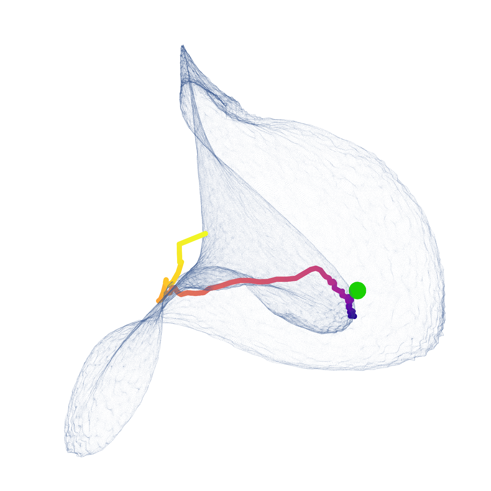
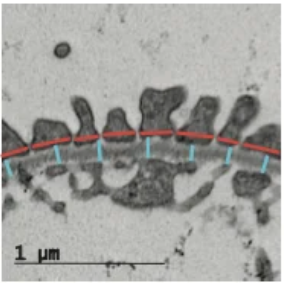

|
Zhaoze (Eric) Wang
I'm a PhD student at the GRASP (General Robotics, Automation, Sensing & Perception)
Lab and the Computational Neuroscience Initiative (CNI) at the University of Pennsylvania.
Email / Google Scholar / GitHub / LinkedIn / X |
Research Interests
I'm interested in how artificial and natural neural networks can learn efficient representations for planning. My research lies at the intersection of robotics and neuroscience.
|
Publications |
|
|
 |
REMI: REconstructing Memory During Intrinsic Path Planning
Zhaoze Wang, Genela Morris†, Dori Derdikman†, Pratik Chaudhari†, Vijay Balasubramanian† NeurIPS, 2025 Paper We present REMI, a theoretical framework showing how coupling, via place cells, between semantic maps and metric maps (from grid cells) enables agents to plan paths in novel environments using metric representations, while reconstructing semantic information (e.g., landmarks) along the planned path. |

|
Time Makes Space: Emergence of Place Fields in Networks Encoding Temporally Continuous Sensory Experiences
Zhaoze Wang†, Ronald W. Di Tullio†, Spencer Rooke, Vijay Balasubramanian NeurIPS, 2024 Paper / Code / Video / Project Page We showed that auto-encoding sensory signals during spatial exploration can lead to a sparse representation of space, similar to hippocampal place cells. We explained how these representations can remain stable even after learning to encode many rooms continuously, without catastrophic forgetting. See also Trading Place for Space. |

|
Trading Place for Space: Increasing Location Resolution Reduces Contextual Capacity in Hippocampal Codes
Spencer Rooke, Zhaoze Wang, Ronald W. Di Tullio, Vijay Balasubramanian NeurIPS (Oral Presentation), 2024 Paper / Video We showed that increasing the resolution of spatial encoding reduces the number of distinct contexts that can be stored by place cells, revealing a trade-off between position accuracy and contextual capacity. We derived theoretical bounds on this trade-off using manifold geometry and neural noise models. See also Time Makes Space. |
|
 |
Digital pathology assessment of kidney glomerular filtration barrier ultrastructure in an animal model of podocytopathy
Aksel Laudon, Zhaoze Wang, Anqi Zou, Richa Sharma, Jiayi Ji, Winston Tan, Connor Kim, Yingzhe Qian, Qin Ye, Hui Chen, Joel M. Henderson, Chao Zhang, Vijaya B. Kolachalama, Weining Lu Biology Methods and Protocols, Vol. 10, Issue 1, 2024 Publisher's Page / pubMed We developed a segmentation and measurement pipeline for Transmission Electron Microscopy (TEM) images using U-Net to automate the diagnosis of proteinuria-related kidney disease. |
Opensource |
|
|
|
NN4N: Neural Networks for Neurosimulation
Open-source PyTorch library for scalable simulation of structured, modular RNNs. Enables fast construction of many interacting recurrent modules with customizable sparse and signed connectivity. Automatically handles initialization to stabilize training and dynamics, and is optimized for GPU acceleration in large-scale sequence modeling. |
Miscellanea |
|
Academic Service
|
Reviewer, NeurIPS 2025 |
|
Teaching
|
(Incoming) Teaching Assistant, ESE 5460: Principles of Deep Learning, Fall 2025 |
|
Design and source code from Jon Barron's website. |